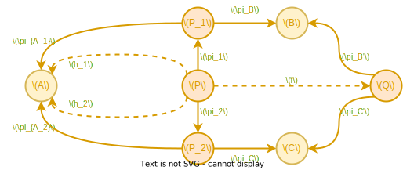
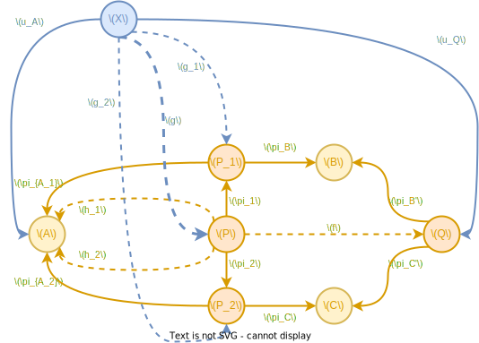
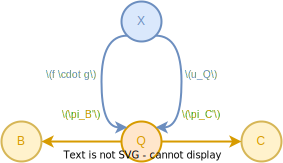
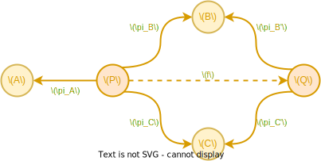

看到 product 的定义时想稍稍证明一下 product 的 product 会有什么样的性质
假设
- \(\langle P_1, \pi_{A_1}, \pi_B \rangle\) 是 \(A\) 和 \(B\) 的 product
- \(\langle P_2, \pi_{A_2}, \pi_C \rangle\) 是 \(A\) 和 \(C\) 的 product
- \(\langle P, \pi_1, \pi_2 \rangle\) 是 \(P_1\) 和 \(P_2\) 的 product（e.g. product 的 product）
- \(\langle Q, \pi_B', \pi_C' \rangle\) 是 \(B\) 和 \(C\) 的 product， \(f: P \rightarrow Q\) 是那个唯一使得 \(\pi_B' \cdot f = \pi_B \cdot \pi_1\) 以及 \(\pi_C' \cdot f = \pi_C \cdot \pi_2\) 的 morphism
- \(h_1 = \pi_{A_1} \cdot \pi_1\) 以及 \(h_2 = \pi_{A_2} \cdot \pi_2\)
如图 
问题：\(\langle P, h_1, f \rangle\) （或者 \(\langle P, h_2, f \rangle\)）会是 \(A\) 和 \(Q\) 的 product 吗？
假设 \(u_A: X \rightarrow A\) 以及 \(u_Q: X \rightarrow Q\)
由于 assum 1，存在 唯一 \(g_1: X \rightarrow P_1\) 使得 \(\pi_B \cdot g_1 = \pi_B' \cdot u_Q\) 以及 \(\pi_{A_1} \cdot g_1 = u_A\) (4)
由于 assum 2，存在 唯一 \(g_2: X \rightarrow P_2\) 使得 \(\pi_C \cdot g_2 = \pi_C' \cdot u_Q\) 以及 \(\pi_{A_2} \cdot g_2 = u_A\) (5)
确立了 \(g_1\) 和 \(g_2\)，由 assum 3，存在 唯一 \(g: X \rightarrow P\) 使得 \(\pi_1 \cdot g = g_1\) 以及 \(\pi_2 \cdot g = g_2\) (6)

于是有
\[ \begin{align} \pi_B' \cdot (f \cdot g) & = (\pi_B' \cdot f) \cdot g & assoc \\ & = (\pi_B \cdot \pi_1) \cdot g & assum \; 4 \\ & = \pi_B \cdot (\pi_1 \cdot g) & assoc \\ & = \pi_B \cdot g_1 & (6) \\ & = \pi_B' \cdot u_Q & (4) \\ \end{align} \]
类似地
\[ \begin{align} \pi_C' \cdot (f \cdot g) & = (\pi_C' \cdot f) \cdot g & assoc \\ & = (\pi_C \cdot \pi_2) \cdot g & assum \; 4 \\ & = \pi_C \cdot (\pi_2 \cdot g) & assoc \\ & = \pi_C \cdot g_2 & (6) \\ & = \pi_C' \cdot u_Q & (5) \\ \end{align} \]

简化关系得上图，注意到由 product 特性，存在 唯一 \(v: X \rightarrow Q\) 使得 \(\pi_B' \cdot v = \pi_B' \cdot u_Q\) 以及 \(\pi_C' \cdot v = \pi_C' \cdot u_Q\)， 而 \(f \cdot g\) 和 \(u_Q\) 都满足，故
\[f \cdot g = u_Q\]
另一方面则很简单
\[ \begin{align} h_1 \cdot g & = (\pi_{A_1} \cdot \pi_1) \cdot g & assum \; 5 \\ & = \pi_{A_1} \cdot (\pi_1 \cdot g) & assoc \\ & = \pi_{A_1} \cdot g_1 & (6) \\ & = u_A & (4) \\ \end{align} \]
而 \(g\) 是在确定了 \(u_A\) 和 \(u_Q\) 之后就唯一确定的，故 \(\langle P, h_1, f \rangle\) 是 \(A\) 和 \(Q\) 的 product
这跟直觉是一致的，如果 \(P\) 是 \((A \times B) \times (A \times C)\)，那自然也“包含”了 \(A, B, C\) 的信息， 自然也是 \(A \times (B \times C)\)
不过，其实我最初是想基于下面这个来证明的

即
\(P\) 同时是 \(P_1\) 和 \(P_2\)
而非
\(P\) 是 \(P_1\) 和 \(P_2\) 的 product
但似乎还是缺少了些箭头(对吗?)
TODO